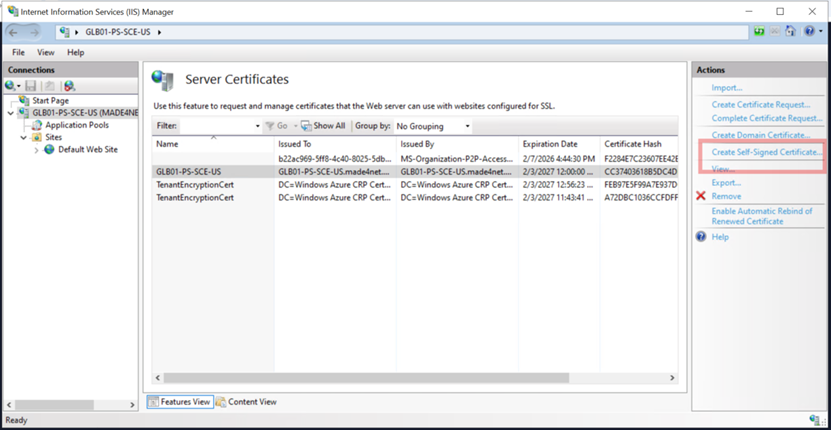
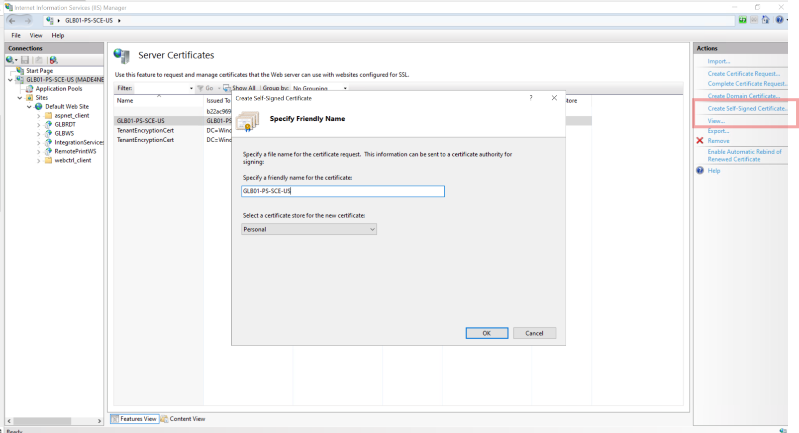
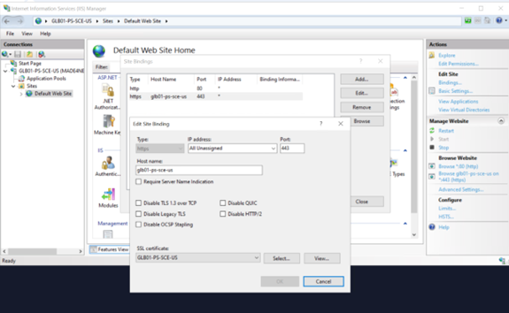
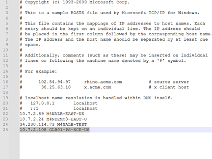
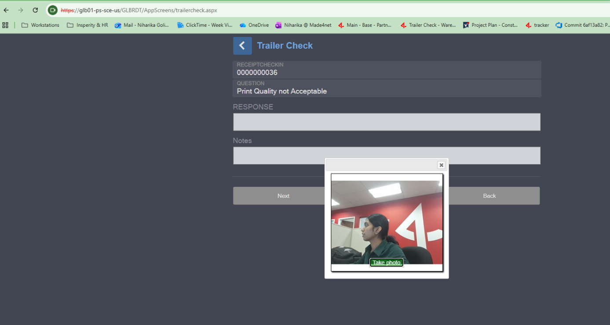

SSL Certificate Setup for IIS (HTTPS Enablement for RDT / Web Apps)
Overview
The SSL Certificate Setup enables HTTPS access for IIS-hosted web applications running on Azure servers.
This setup is required for features such as camera access, which are blocked by browsers on servers when applications are accessed over non-secure (HTTP) connections.
Purpose
- Enable HTTPS for IIS-hosted applications
- Allow browser features such as camera access
- Support secure access from local machines to server-hosted applications
- Standardize HTTPS configuration across environments
Scope
- IIS SSL certificate creation and binding
- Local host file updates
- Web.config security header updates
- Validation of HTTPS and camera access
Implementation Summary
While performing application workflows that require browser features such as camera access, users were unable to proceed when accessing the application over HTTP.
To resolve this:
- A self-signed SSL certificate was created on the IIS server
- HTTPS binding was configured at the IIS site level
- Local hostname mapping was added
- Required security policies and camera permissions should be updated in Web.config
This allows secure HTTPS access and enables browser-restricted features.
Affected Components
| Component | Details |
|---|---|
| IIS | SSL certificate and HTTPS binding |
| Web.config | Security headers |
| Environment | DEV |
| Server | Azure VM |
IIS Configuration
Create Self-Signed Certificate
On the application server:
- Open IIS Manager
- Select the server node
- Open Server Certificates
- Click Create Self-Signed Certificate
- Enter a certificate name matching the server hostname
Creating Self-Signed Certificate

Match Certificate name with Server Name

Bind Certificate to IIS Site
- Navigate to:
Sites → Default Web Site - Click Bindings (right panel)
- Click Add
Configure:
| Setting | Value |
|---|---|
| Type | https |
| IP Address | All Unassigned |
| Port | 443 |
| Host name | Server name |
| SSL Certificate | Select the self signed certificate you created |
Binding Certificate to IIS

Save the binding.
Web.config Updates
Update the application’s (Workstation or RDT) Web.config to allow camera access and related browser features.
Content-Security-Policy
<add name="Content-Security-Policy"
value="default-src * 'unsafe-inline' 'unsafe-eval';
script-src * 'unsafe-inline' 'unsafe-eval';
connect-src * 'unsafe-inline';
img-src * data: blob: 'unsafe-inline';
frame-src *;
style-src * 'unsafe-inline' 'unsafe-eval';
style-src-elem * 'unsafe-inline' 'unsafe-eval'" />
Permissions-Policy
<add name="Permissions-Policy"
value="accelerometer=(), geolocation=(), gyroscope=(),
magnetometer=(), microphone=(), payment=(), usb=()" />
Local Machine Configuration (DEV Testing)
Update Hosts File
On the local machine, edit the hosts file as Administrator:
C:\Windows\System32\drivers\etc\hosts
Add:
<ServerIP> <server-host-name>
Update Host file in drivers folder on local machine

Validation / Testing
From the local machine, access the application using HTTPS:
https://<server-host-name>/<application-path>
Output

Expected Results
- HTTPS connection established
- Browser prompts for camera permission
- Camera access works successfully
Integration Impact
- No database changes
- No scheduler or backend logic changes
- Changes limited to IIS, Web.config, and local access configuration
This setup provides a secure and reusable approach for enabling HTTPS across client environments.